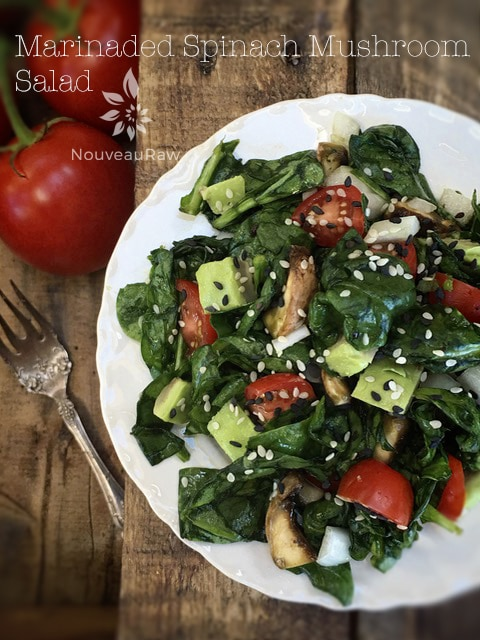

Marinaded Wilted Spinach Mushroom Salad

~ raw, vegan, gluten-free, nut-free ~
Tonight’s dinner was created on the basis of a mishap. Bob went to the grocery store with a list but missed reading the bottom portion, so only 1/2 of the ingredients came back for the Nori Rolls that I had in mind for us to make. So the Marinaded Wilted Spinach Mushroom Salad was born.
I realize that the spinach appears to be cooked in the photo, but this couldn’t be further from the truth. It has been wilted through the quick trick of gently massaging it with salt and lemon juice. These help to break down the cellular wall within the spinach.
Personally, I never liked cooked spinach because it felt slimy going down, but this way of preparing it doesn’t it. I hope you enjoy the fresh lightness of this salad. Blessings, amie sue
Ingredients:
Wilting spinach:
- 1 lb spinach
- 1/4 tsp Himalayan pink salt
- 1/2 lemon, juiced
Marinade:
- 1 Tbsp Tamari or Braggs
- 2 Tbsp cold-pressed olive oil
- 1 tsp garlic powder
- pinch of cayenne
- 1 medium tomato (diced)
- 1/2 red onion (sliced thinly)
- 7 oz button mushrooms (approx. 3 cups chopped)
- 1/2 avocado (diced)
Preparation:
Wilting spinach:
- In a large bowl, gently massage the spinach, salt and lemon juice until wilted. The salt and lemon juice help to break the spinach down and give a cooked appearance.
Marinade:
- For the marinade – Combine all of the ingredients in a large bowl and place veggies in sauce and stir until coated.
- Add in the wilted spinach and let stand for 15 to 30 minutes. Once ready…eat!
- Storage: Best to eat right away. We did store a portion of it in the fridge in a sealed container. We had to drain a little liquid off the next day and add a tad of salt, but outside of that, it was wonderful.
© AmieSue.com